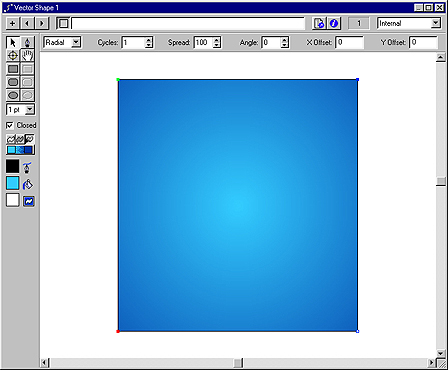
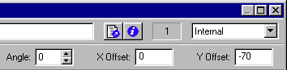
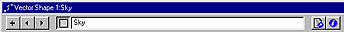
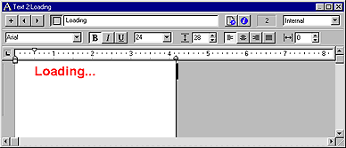
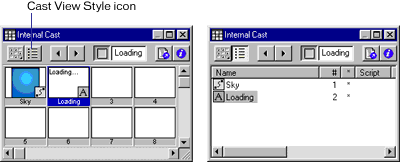

Using Director > Director 8 Tutorial > Create media in Director
Using Director > Director 8 Tutorial > Create media in Director |
Create media in Director
You can create media in Director or import it from other programs. Simple media, such as text and backgrounds, are ideally suited for creation in Director.
Director lets you create multiple-curve vector shapes: mathematical descriptions of shapes filled with color or gradient colors. A vector shape uses much less memory than a comparable bitmap and downloads faster from the Internet.
You will create a vector shape filled with gradient colors to serve as your movie's background.
1 |
Choose Window > Vector Shape. |
2 |
Click the Filled Rectangle tool and drag the cross hair from the upper left corner of the Vector Shape window to the lower right corner, creating a rectangle close to the size of your Stage. |
Exact size is not important; you can resize the image later. |
|
3 |
Click the rightmost Gradient Colors box and select a dark to medium shade of blue from the Color menu.
|
4 |
Click the leftmost color box and select a light sky blue. |
5 |
Click the Gradient button to create a smooth transition from light blue to dark blue.
|
6 |
From the Gradient Type pop-up menu at the top of the window, select Radial. |
Radial creates a circular, rather than linear, gradient effect.
 |
|
7 |
In the Y Offset box, type -70. (If you do not see the Y Offset box, make the window larger.)
 |
This offsets the center of the gradient by moving it up 70 pixels, creating a sunlit sky effect. |
|
You would use a positive number in the Y Offset box to move the gradient down. |
|
8 |
In the Cast Member Name field at the top of the window, type Sky as the name.
 |
Naming cast members makes it easier to identify them in the Score. If you don't enter a name, Director assigns a number to the cast member based on its position in the Cast window. |
|
9 |
Close the Vector Shapes window. |
The Text window offers standard text formatting controls in a window that resembles a word processing program.
1 |
Choose Window > Text. |
2 |
If necessary, resize the window to see all of the controls along the top. |
3 |
Use the various fields to set font attributes. To match the font attributes of the Completed_Tutorial movie, use Arial, 24-point bold. |
4 |
Choose Modify > Font and click the Color box to select a shade of red. |
5 |
In the Text window, type Loading... |
6 |
Name the text cast member Loading.
 |
7 |
Close the Text window. |
View cast members in the Cast window
Notice how the cast members you've created appear in the Internal Cast window with the names you've entered.
Use the Cast View Style icon to toggle between Cast List view and Cast Thumbnail view. Note that each view offers different features that assist you in managing your cast members.

This movie only requires a single Cast window; it does not use many cast members or media types. For future projects, keep in mind that you can create as many Cast windows as necessary to organize your work.